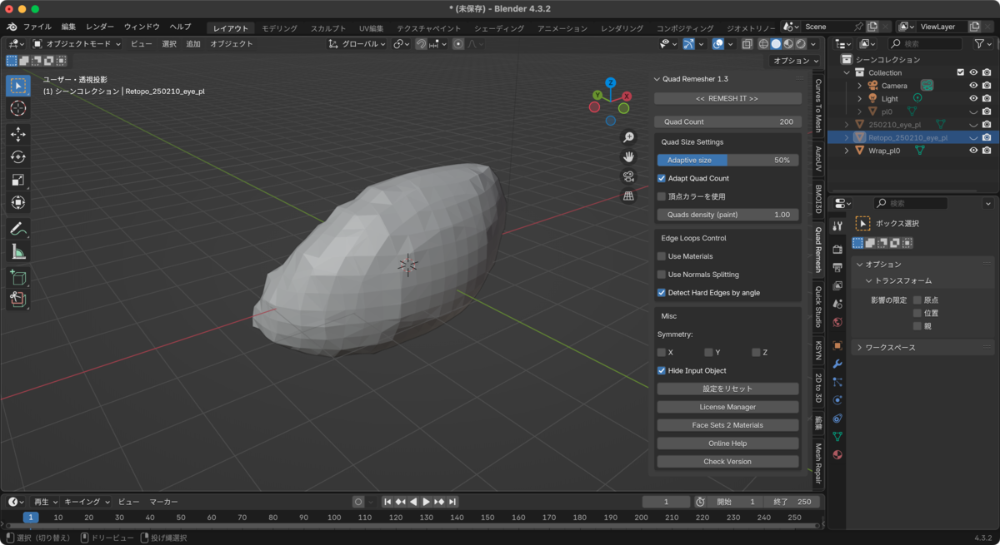
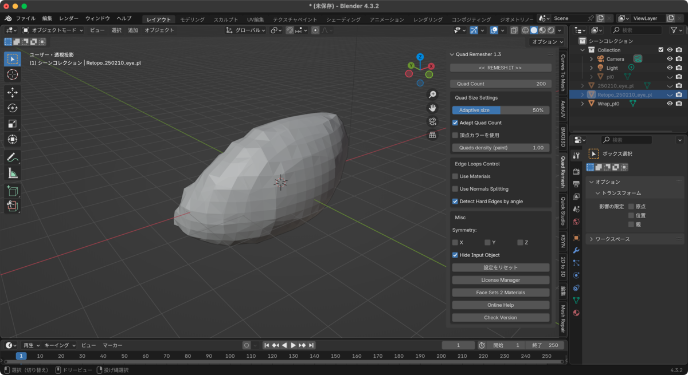
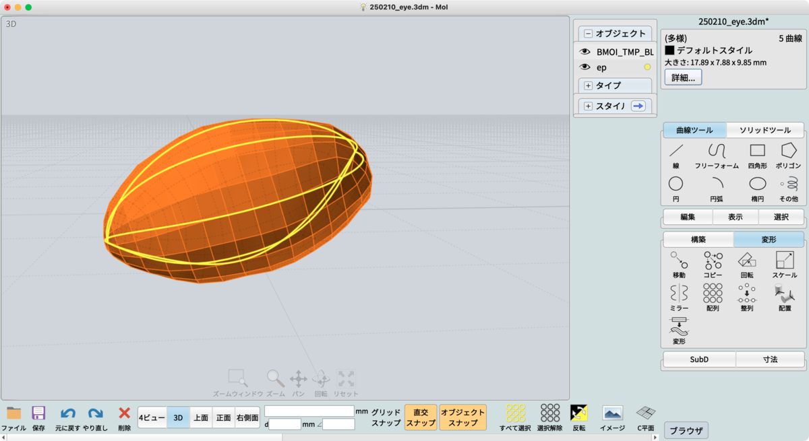
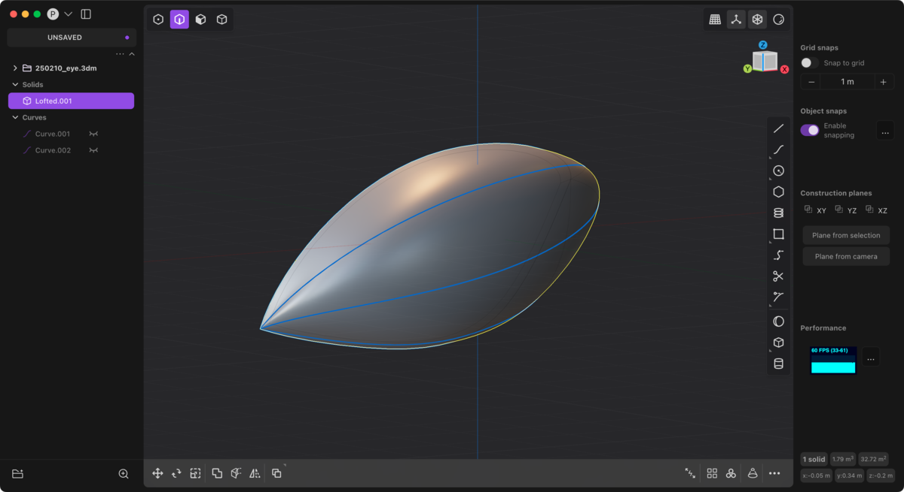
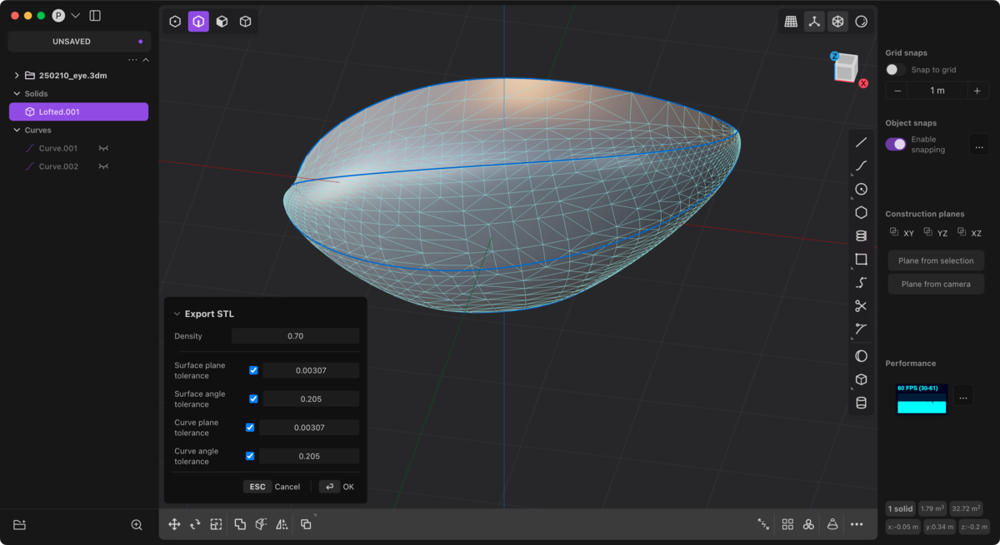
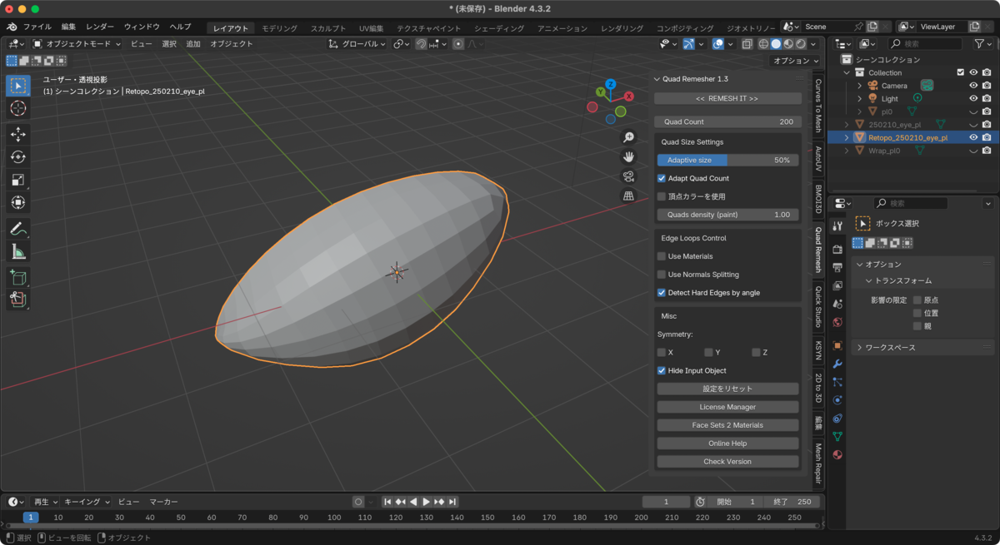

下記Blueskyでのメモを、一応ブログにも整理して転記。
bsky.appボクセルをやり始めて、改めて昔ブログに書いた、Quad Remesherを駆使する手法による "清書" の大切さを改めて感じる。 funatsufumiya.hatenablog.com/entry/2024/0... ボクセルからスカルプトに流してスムージングして、Quad Remesherしたものは、一見綺麗に見えても、やはりメッシュは実は汚い。（スレッドに続く。）
— Fumiya Funatsu (@funatsufumiya.bsky.social) 2025-02-10T13:09:30.763Z
以前熱心に書いていた『CAD→スカルプト』の連携手法として、最近自分自身がボクセルツールを使い始めて、逆順としての『スカルプト→CAD』による清書の大事さに気付いたのでメモ。
まず、大前提としてCADでは一発でラインが上手く引けないことがある。
というか紙に清書するように空間に一発で良い線を書くのは難しいので、ボクセルないしスカルプトによって、空間にラフを書くことを考える。
これで作ったものを、BlenderのQuad RemesherやNomad SculptのQuad Remeshによってローポリにすると、一見綺麗そうなメッシュが得られるものの、やはり手描き特有の癖のあるメッシュになってしまう。
 
そこで登場するのが、以前紹介したCAD→スカルプトの手法の逆バージョン。
おそらく一度は記事中で書いたと思うけれど、一度得られたローポリメッシュを、例えばMoi3Dにインポートして、このメッシュの位置情報を元に、CADで線を清書する。

そして、PlasticityにCADデータ (ここでは3dm) をインポートして、Loft等によりSurfaceとSolidを得る。

この工程を経る理由は、Moi3Dでは複雑なパスから連続したSurfaceやSolidを得るのはかなり難易度が高いため。その代わりにMoiは空間上の線をとても楽に高精度で引くことができる。これをPlasticityにより補い、Blender等で利用できる連続したメッシュを得る。

こうして得られたメッシュのSTLやOBJなどは、現時点で既に滑らかで綺麗ではあるけれども、Plasticityの制約で、あまりトポロジーの良いメッシュを出力してはくれないので、一度BlenderにかけてQuad Remesherを行うと、よりトポロジーの美しいメッシュが得られる。

一度慣れれば簡単でサクサクと進められるのだけれど、複数のツールをまたぐこともあり、ツールやアドオンのインストールなど、環境構築の時間はかかるかもしれない。
なお、複数のツールをあえてまたぐのは、空間上に思った通りの線を引くためのラフ作業の精度を上げるためにある。既に三面図等がある場合は、BlenderやCADで直接作業するのが良いと思うが、考えながら試行錯誤するには、清書過程を経るのもあり、ちょうど良いプロセスのように思う。